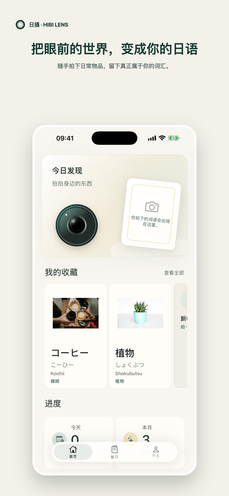
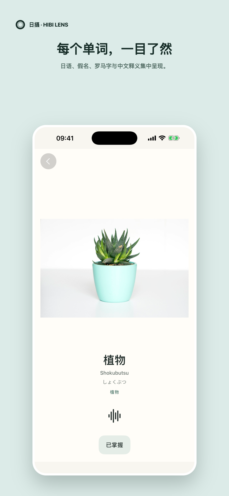
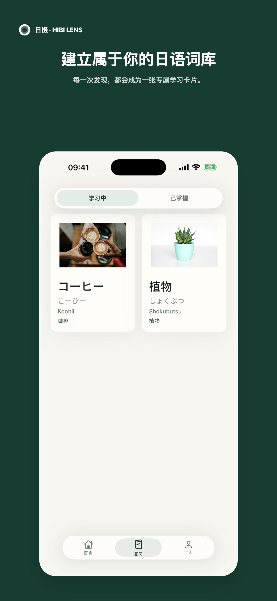

日摄是什么？
日摄是一款 iPhone App，可以从照片识别日常物品，并把结果变成日语词卡。它的英文品牌名是 Hibi Lens，在官网和 GitHub 地址中写作 HibiLens。
一台日语语言相机
拍下身边的东西，把它们变成可以收藏、聆听和复习的日语词卡。
iPhone 可用 · 无需账号

留意一个日常物品
把它变成日语词卡
建立自己的词库
看见并拍下
拍一张照片，或从相册中选择一张。日摄会识别日常物品，并找到它对应的日语词。
看懂
日语词、假名、罗马字、含义和发音集中呈现，一眼就能看懂。

收藏并复习
每一次发现都会成为一张可以收藏、复习，并从学习中移到已掌握的词卡。

隐私，从设计开始
识别在设备上完成。照片、词卡和学习进度也保存在设备上。日摄不需要账号。
常见问题
日摄是一款 iPhone App，可以从照片识别日常物品，并把结果变成日语词卡。它的英文品牌名是 Hibi Lens，在官网和 GitHub 地址中写作 HibiLens。
拍一张照片，或从相册中选择一张。日摄会识别支持的日常物品，并显示对应的日语词、读音、含义和发音。
不会。图像识别和词汇查询都在设备上完成，照片、词卡和学习进度也保存在设备上。
不需要账号。日摄的核心功能完全在 iPhone 上运行。
根据词语本身，词卡可以包含日语词、假名、汉字、罗马音、含义和发音。
从今天看见的东西开始
把身边的世界，变成真正属于你的日语词库。